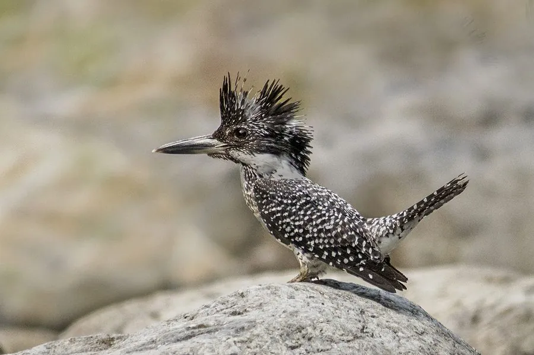

鸟类 · 动物界
冠鱼狗 Megaceryle lugubris

中国最大的翠鸟，通体黑白斑驳，头顶冠羽蓬松如羽冠。常在山溪石滩上静立，俯冲入水捕鱼，飞行时黑白羽色十分醒目。
- 分类
- 门脊索动物门纲鸟纲目佛法僧目科翠鸟科属大鱼狗属
- 栖息环境
- 山地溪流、江河、水库、海岸岩礁与石滩，偏好清澈流水和可供停栖的突出岩石。
- 地理分布
- 喜马拉雅山脉、中国东部和南部、朝鲜半岛至日本；多为留鸟，部分下游迁移。
- 保护级别
- IUCN 红色名录列为无危（LC）；中国列入“三有”陆生野生动物名录。
物种志
冠鱼狗体长约三十八至四十二厘米，体重二百三十至三百一十克，是翠鸟科中体型较大的成员。通体黑白相间：头顶黑色，冠羽细长蓬松，形成明显的羽冠；颈侧和喉部白色，上体灰黑并密布白色斑点与横斑，下体白色，胸部有黑色横带，雄鸟还具栗红色胸带。喙粗长黑色，虹膜深褐，脚灰黑色。
它栖息于山地溪流、河谷、水库与海岸岩礁，偏爱水质清澈、有石滩和急流的生境。常单独停栖在伸出水面的岩石或树枝上，发现小鱼后垂直俯冲入水，捕获后返回栖枝摔打吞食。飞行时黑白斑驳的羽色和蓬松羽冠十分容易辨认。繁殖期在河岸土崖或沙坡上挖掘深达一米的隧道巢，每窝产卵四至六枚。冠鱼狗分布于喜马拉雅山脉至中国东部、日本，中国大部分山区有记录，列入“三有”名录。
形态与习性
- 体长38–42 厘米
- 体重230–310 克
- 食性小鱼为主，兼食虾与水生昆虫
- 繁殖河岸土崖挖隧道巢，每窝 4–6 枚
- 特征黑白斑驳羽色与蓬松冠羽
- 保护级别IUCN 无危；“三有”动物
趣味知识
- 是中国体型最大的翠鸟，比常见翠鸟大近一倍。
- 冠羽蓬松竖起，飞行时像戴着一顶黑白羽帽。
- 会在溪流石滩上定点悬停，再垂直扎入水中。